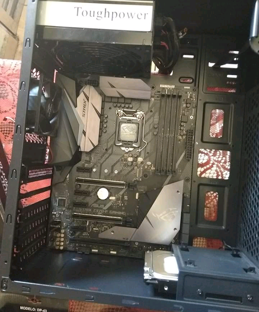
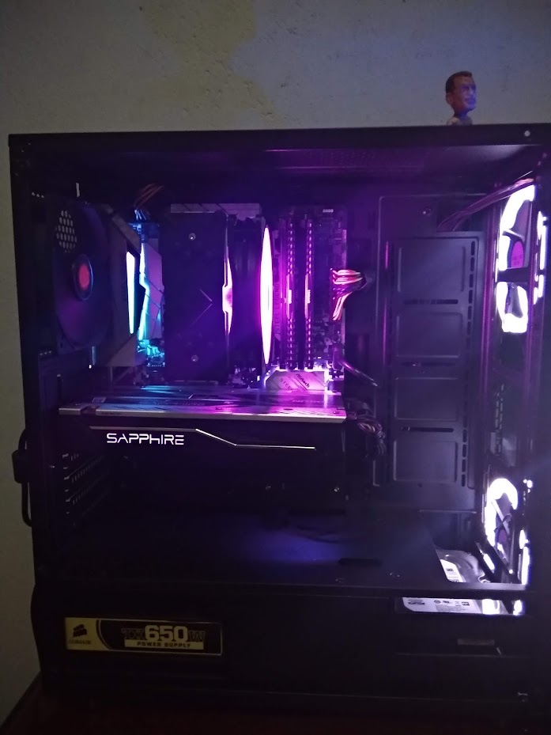
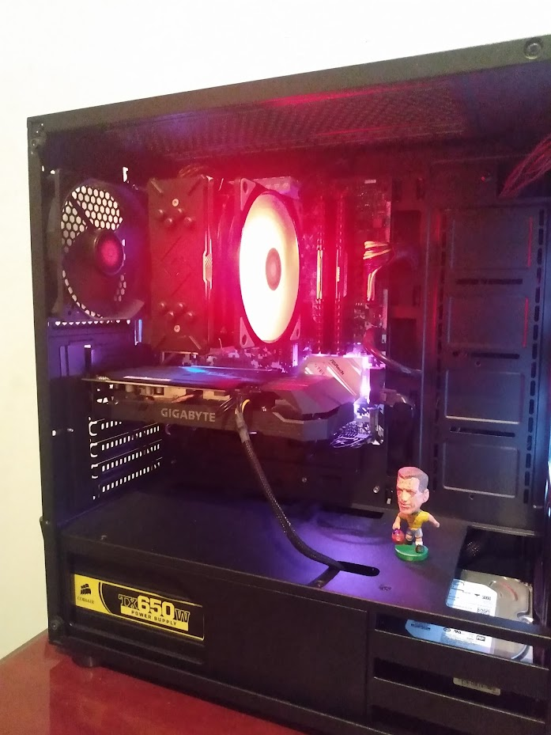
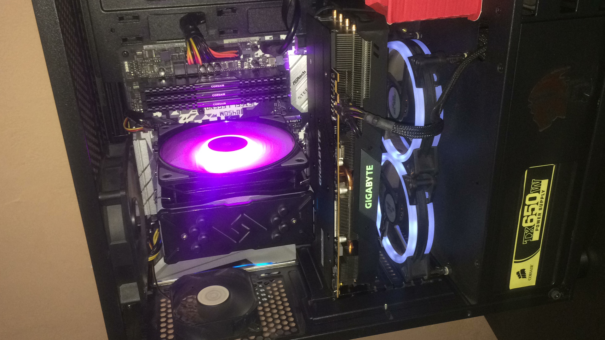
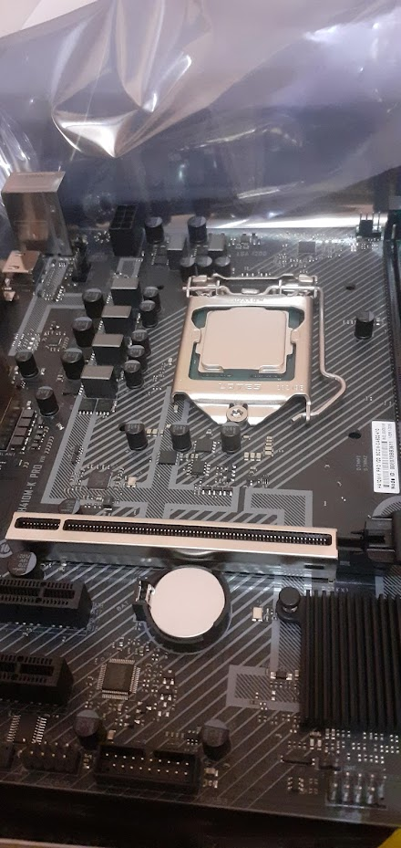
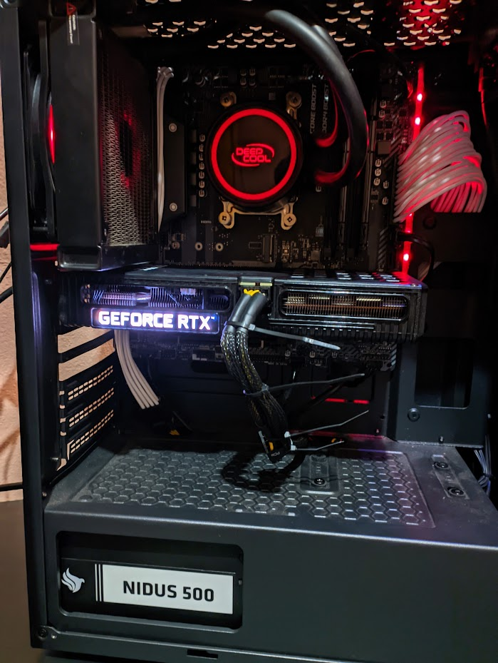

Trata-se de um trabalho da faculdade de Engenharia de computação turma do primeiro período de 2022. Aqui irei abordar alguns temas sobre mim e por fim descrever como foi
desenvolvido este site.
Quem Sou eu:
Nessa primeira abordagem irei me apresentar e falar um pouco sobre mim.
Meu nome é Marcos Túlio, tenho 26 anos, moro em Ibirité - região metropolitana de Belo Horizonte. Estudo Engenharia de computação no Instituto Infnet.
Por que eu escolhi este curso ?
Bom, sempre fui fã de tecnologia e me considero privilegiado por ter nascido já em uma época moderna e ter vivenciado a modernização. Com 5 anos eu ganhei um Super Nintendo,
joguei clássicos como Super Mario World e Donkey Kong. Pouco tempo depois minha mãe comprou nosso primeiro computador, com incríveis 256mb de memória ram e
um cpu Intel Celeron da época a qual eu não me lembro qual era especificamente o modelo. Fiz muito com essa máquina, joguei em emuladores como Project64, ePSXe, Emurayden,
Mame e etc. O tempo foi passando e este computador se tornou absoleto e teve que descansar. No colégio vivi a época do Orkut, MSN, jogos online como Counter
Strike 1.6, e participei de foruns como Yahoo respostas, foi uma boa época. O tempo foi passando e durante a época da alta de jogos online eu descobri minha paixão por hardware, montei meu primeiro computador do zero em 2019 ,
Core2Duo, 4g bddr3 e uma Nvidia Gt210, vi que não servia para o que queria na época que era jogar, e decidi pesquisar sobre o chipset dessa máquina o então G41, descobri que o mesmo
não suportava bons upgrades e consegui migrar para um i7 2700k com 8gb de memória ram ddr3 1600mhz e um chipset z77 de uma Mainborad Asus RogStrix. Foi um bom upgrade mas ainda continuei limitado pois tinha uma gpu
extremamente antiga a clássica Nvidia Gtx 580, então vi que precisava de um upgrade.
Saga montando PC Gamer
Meu primeiro PC Gamer foi um AMD Ryzen 5 1600, gpu RX 570 também da AMD e 16gb de ram DDR4.
Segundo PC gamer montado por mim foi um i5 8400, gtx 970 8gb ddr4 e uma Mainboard Asus RogStrix z370

Neste meu terceiro PC gamer teve três transições de GPU, comecei na AMD RX 480, depois GTX 1660 Super e por ultimo AMD RX 5600xt. Três transições de CPU Ryzen 5 1600, Ryzen 5 3500x
e por fim Ryzen 5 3600. A base foi Sempre a mesma, uma Mainboard Asrock b450m Steen Legend e 16gb ram ddr4 Corsair.
Primeira transiçao: RX 480
Segunda transiçao: GTX 1660 Super
Terceira transiçao: RX 5600XT! Este era meu único PC e precisou ser vendido em 2020 na época da pandemia e decretou uma época a qual fiquei 1 ano sem um PC de qualidade.
A volta triunfal
Em 2021 eu voltei a montar PC Gamer através de importações pelo site Aliexpress. No começo do ano eu comprei um CPU Intel i5 10500es, tratava-se de uma amostra de engenharia que eu
permaneci por alguns meses antes de montar meu computador atual, mas ainda falarei sobre isso. Ainda falando deste Intel , ele foi utilizado com memorias chinesas Tanbash do Aliexpress
e uma Placa-mãe que também foi importada, de boa qualidade com chipset h410. O problema foi quando eu decidi comprar uma gpu usada em plena alta da mineração, com os preços nas alturas eu comprei
novamente uma GTX 970 lembra dela ? Tive um modelo parecido no meu segundo PC Gamer, claro que não era um modelo da Strix da Asus né ? Talvez seja por isso que meu uma intensa dor de cabeça,
A Gpu simplesmente estava morrendo, artefatos na tela, desligando sozinha, o que eu fiz ? Tive uma ideia de reduzir o clock da Gpu e da memoria da gpu. E assim, ao ver que os problemas foram
resolvidos, modifiquei a BIOS dessa Placa de vídeo para que ela sempre operasse nesta frequência.

Meu Atual PC Gamer
Placa-mãe Msi b450 Mortar max
CPU Ryzen 5 5600
Memoria: 16gb ddr4
Placa de vídeo: Nvidia RTX 3060 12gb
Dispensa comentários, é meu atual PC Gamer com o qual nunca tive problema nenhum.

Quando iniciei este curso e o que eu estou aprendendo na faculdade:
Iniciei este curso no dia 10 de Outubro de 2022 e nunca tinha tido contato com programação de fato, como devem ter percebido minha paixão sempre foi hardware, mas confesso,
estou gostando muito e tendo muita facilidade para aprender, talvez seja pelo fato de eu sempre ter tido bastante contato com tecnologia. Estou aprendendo sobre criação de sites
utilizando HTML, CSS e Javascrip. Comecei aprendendo sobre a introdução, tag semanticas, boa formatação, scripts simples e estilização através do CSS.
Como eu desenvolvi este site ?
Este site ficou bem interessante para quem ainda não completou nem um mês na faculdade não é mesmo ? Pois é, obviamente eu não aprendi isso diretamente nas aulas, mas recebi uma base
dos professores, li os livros recomendados e pesquisei alguns temas no youtube, como por exemplo menu mobile. Se voce estiver lendo este artigo pelo computador experimente reduzir a janela para qualquer valor abaixo de
600px e verá a mágica acontecer. Fiz isso utilizando o @media em CSS. Aprendi também como dar funcionalidade ao menu com Javascrip e modifiquei o código para criar dois botões um exclusivo para
fechar e um para abrir, apenas questão de gosto e dar identidade ao meu projeto.